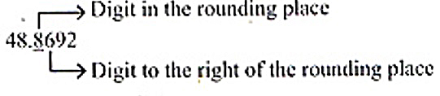
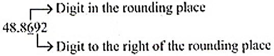
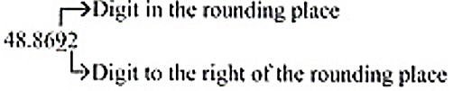

ENGAGE
Among the eight planets in the SOlar System, Mercury is the smallest and closest to the SUn with an orbital periood of about 116 days, which is much faster than any other planet. This rapid motion may have led to it being named after the Roman deity Mercury, the fast-flying messenger to the gods. Mercury revolves around the sun at a speed of about 48.8692 km per second. Round this number to the nearest tenths, hundredths and thousadths.
EXPLORE
Nearest Tenths
Think 6>5, so, round up.
Add 1 to the digit in the rounding place.
Drop all digits after the rounding place.
Answer:48.9
Nearest hundredths
Think 9>5, so, round up.
Add 1 to the digit in the rounding place.
Drop all digits after the rounding place.
Answer:48.87
Nearest thousandths
Think 2<5, so, round down.
Drop all digits after the rounding place.
Answer:48.869
EXPLAIN
To round a decimal number, determine first the rounding place. Then look at the digit to the right of the rounding place. The digit u btge rounding place is the one that will either be rounded up or rounded down depending on the digit to its right. If it is 5 or greater, add 1 to the digit in the rounding place. If it less than 5, retain the digit in the rounding place. Do not forget to drop all the digits after the rounding place.
Here are some examples.
Round each decimal to the indicated place.
| Nearest Tenths | Nearest Hundredths | Nearest Thousandths | |
|---|---|---|---|
| 8.4325 | 8.4 | 8.43 | 8.433 |
| 75.2751 | 75.3 | 75.28 | 75.275 |
| 216.2537 | 216.3 | 216.25 | 216.254 |
Applications and Problem Solving
Two boxes for mailing are weighted at the post office. Box A weights 8.25 kg while Box B weights 8.225 kg. Which of the two boxes is heavier when the weights are rounded to the nearest tenths?